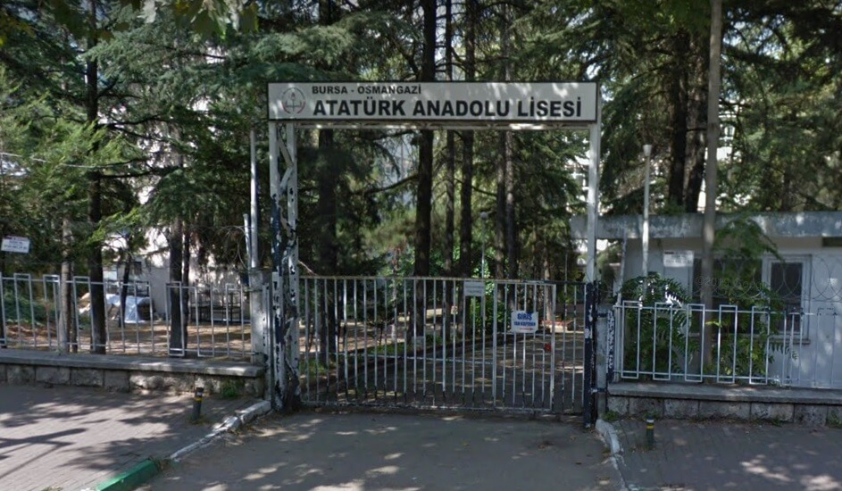

2001 yılında Bursa'da doğdum. Öğrenim hayatıma yeni başladığım yıllarda satranç ile tanıştım.
Birkaç yıl boyunca satranç kursuna gittim. Ancak daha sonra lise sınavının yaklaşmasıyla birlikte dershaneye yazıldım.
Artık haftasonları dershaneye gidiyordum ve satranç benim için bitmişti.

Bursa Atatürk Anadolu Lisesi'nde okudum. Lise yıllarında tarih ve teknolojik gelişmelerle ilgilendim.
Video oyunları oynamayı seviyorum. Lisede arkadaşlarla birlikte video oyunları oynardık. Aslında hala ara sıra giriyoruz.
Bilgisayarla erken tanıştım. Yazılımı hep merak etmişimdir. Üniversite sınavının sonucunda Bilgisayar Mühendisliğini tercih ettim.